La neumática es la tecnología que utiliza aire comprimido para transmitir energía y realizar un trabajo útil. Antes de entrar en los cálculos de cilindros y circuitos, conviene fijar tres bloques de ideas: las propiedades del aire como fluido de trabajo, las magnitudes fundamentales con las que vamos a operar, y las leyes de los gases que gobiernan su comportamiento.
El aire atmosférico es una mezcla de gases (≈ 78 % N₂, 21 % O₂, 1 % otros) que, comprimida, se utiliza como medio para transmitir energía. Tres propiedades son clave:
· Presión manométrica (\(p_{man}\)): la que indica el manómetro. Se mide respecto a la atmósfera. Es la que usamos en las fórmulas de fuerza del cilindro (\(F = p_t \cdot S\)).
· Presión absoluta (\(p_{abs}\)): la real respecto al vacío. Es la que hay que usar en las leyes de los gases (Boyle, Charles, gas ideal).
Un gas ideal es un modelo en el que se desprecian las fuerzas entre moléculas y el volumen propio de éstas. El aire a las presiones y temperaturas habituales en neumática se comporta razonablemente como gas ideal.
Para una masa fija de gas a temperatura constante, presión y volumen son inversamente proporcionales. Es la ley que se aplica al consumo de aire de los cilindros (paso de condiciones de trabajo a condiciones normales).
A presión constante, el volumen es directamente proporcional a la temperatura absoluta.
A volumen constante, la presión es directamente proporcional a la temperatura absoluta.
\(n\): moles de gas · \(R = 8{,}314\) J/(mol·K). Integra las tres leyes anteriores en una sola expresión.
Un cilindro neumático es un actuador lineal que convierte la energía del aire comprimido en movimiento rectilíneo. El émbolo divide el cilindro en dos cámaras; la diferencia de presión entre ellas genera la fuerza.
Un cilindro neumático transforma la energía del aire comprimido en fuerza lineal. El aire entra en una cámara, empuja el émbolo y produce un desplazamiento rectilíneo del vástago. La fuerza aparece porque la presión actúa sobre una superficie: cuanto mayor sea la presión o mayor sea la sección efectiva, mayor será la fuerza disponible.
En un cilindro de simple efecto, el aire realiza trabajo útil normalmente solo en el avance, mientras que el retorno se efectúa por un muelle. En un cilindro de doble efecto, el aire actúa alternativamente en ambas cámaras, de manera que hay trabajo útil tanto en el avance como en el retroceso.
Interpretación física: la presión por sí sola no basta para producir una gran fuerza; esa presión debe actuar sobre una superficie. Por eso, a igual presión, un cilindro de mayor diámetro desarrolla más fuerza.
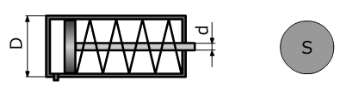
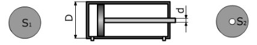
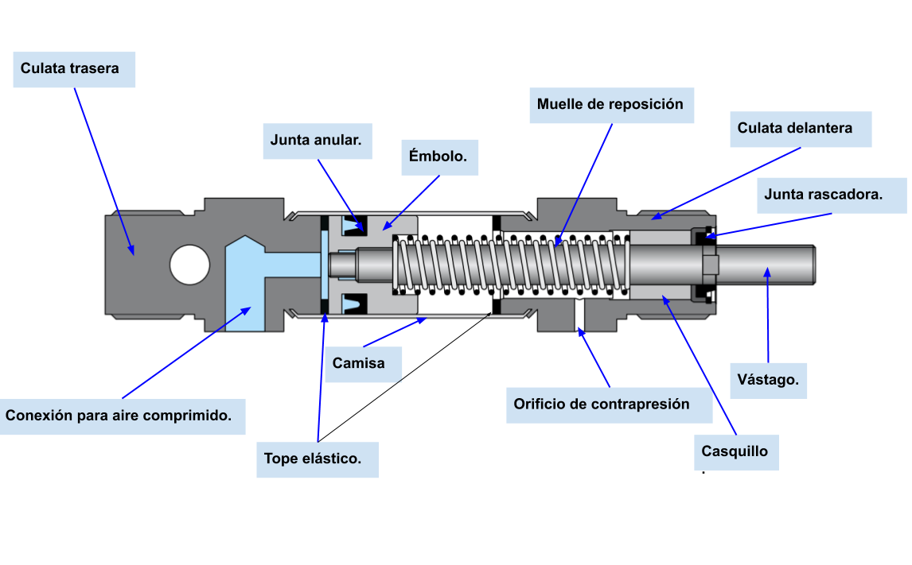
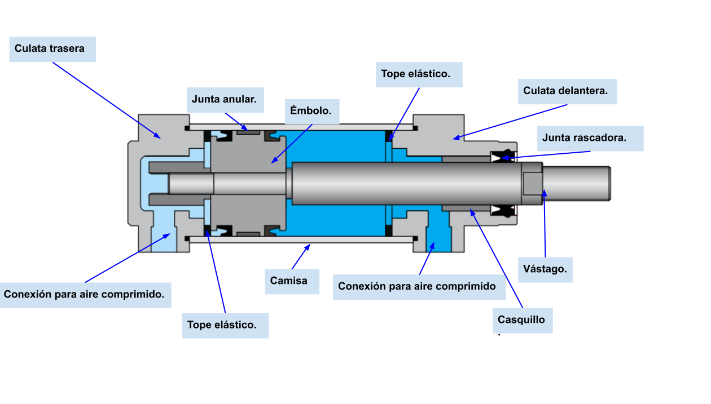
La fuerza depende de la presión y de la sección efectiva sobre la que actúa. Hay dos secciones distintas según el sentido del movimiento:
En el avance, el aire empuja sobre toda la cara del émbolo, por lo que la superficie útil es la sección completa del pistón. En el retroceso de un cilindro de doble efecto, una parte de esa superficie queda ocupada por el vástago; por eso la sección efectiva disminuye y la fuerza de retroceso es menor.
Consecuencia directa: en un cilindro de doble efecto siempre se cumple que \(S_r < S_a\), y por tanto, para la misma presión, la fuerza de retroceso será menor que la de avance.
\(D\): diámetro interior del cilindro (diámetro del émbolo). Es la sección completa del émbolo.
\(d\): diámetro del vástago. \(S_r < S_a\) siempre → fuerza al retroceso < fuerza al avance.
La fuerza que desarrolla un cilindro neumático depende de la presión de trabajo y de la sección efectiva sobre la que actúa el aire. En condiciones ideales se obtiene una fuerza teórica, pero en un cilindro real aparecen pérdidas por rozamiento y, en el caso del simple efecto, también interviene la fuerza del muelle de retorno.
En un cilindro de simple efecto, el aire comprimido actúa solo durante el avance. Si se despreciaran todas las pérdidas, la fuerza desarrollada sería:
En la práctica, el cilindro no entrega toda la fuerza teórica. Parte de ella se pierde por rozamiento entre juntas, émbolo y camisa, y otra parte se consume en vencer la fuerza del muelle, que se opone al avance.
Si el problema no da las pérdidas desglosadas y en cambio proporciona el rendimiento del cilindro, entonces las pérdidas por rozamiento pueden recogerse en un único factor multiplicativo. En ese caso se escribe:
Importante: la fuerza del muelle no se multiplica por el rendimiento porque el rendimiento corrige la fuerza neumática ideal del cilindro, es decir, las pérdidas del sistema aire-émbolo. En cambio, la fuerza del muelle es una fuerza mecánica resistente adicional y por eso se resta aparte.
En un cilindro de simple efecto, durante el retroceso no actúa aire comprimido. El retorno se produce únicamente gracias al muelle interno.
En el avance, el aire actúa sobre toda la sección útil del émbolo.
En el retroceso, el aire actúa sobre una sección menor porque el vástago ocupa parte de la superficie. Por eso la fuerza de retroceso es menor que la de avance para la misma presión.
Consecuencia: como \(S_r < S_a\), también se cumple que \(F_{t,\text{ret}} < F_{t,\text{av}}\).
En un cilindro de doble efecto no interviene un muelle de retorno. Las pérdidas principales son las debidas al rozamiento interno.
Aquí el rendimiento recoge las pérdidas neumáticas y mecánicas del avance.
Como no hay muelle, no se resta ninguna fuerza adicional: el rendimiento ya resume las pérdidas internas del sistema.
En simple efecto, el aire trabaja en el avance y el muelle produce el retroceso. En doble efecto, el aire trabaja en ambos sentidos. La fuerza real siempre es menor que la teórica, y en un cilindro de doble efecto la fuerza de retroceso es menor porque la sección efectiva también lo es.
El consumo de aire indica qué volumen de aire necesita el cilindro para realizar su movimiento. Primero se calcula el volumen geométrico barrido por el émbolo y después, si se pide el aire en condiciones normales, se corrige usando la relación entre la presión de trabajo y la presión atmosférica.
Idea práctica: el consumo en CT es el volumen a la presión de trabajo; el consumo en CN es el volumen equivalente si ese aire se expandiera hasta presión atmosférica.
\(V_{cil}\): volumen del cilindro por ciclo · \(n\): ciclos por unidad de tiempo
SE: \(V_{cil} = S_a \cdot C\) · DE: \(V_{cil} = (S_a + S_r) \cdot C\)
Para obtener el consumo real del compresor hay que expandir el aire a presión atmosférica (ley de Boyle a T constante):
\(p_{atm} \approx 101\,325\) Pa \(\approx 10^5\) Pa · La suma \(p_t + p_{atm}\) = presión absoluta
La potencia mide la rapidez con la que el cilindro realiza trabajo. Puede calcularse desde el punto de vista mecánico, usando fuerza y velocidad, o desde el punto de vista neumático, usando presión y caudal. Ambas formas representan la misma idea física expresada con variables distintas.
Consecuencia: si aumenta la fuerza o la velocidad, la potencia también aumenta. En la práctica, la potencia real será menor que la ideal por las pérdidas del sistema.
Solo avance (el retroceso no realiza trabajo útil). C: carrera (m) · n: ciclos/s
Se suman avance y retroceso.
\(p_t\): presión manométrica (Pa) · \(Q_t = C_{aire(CT)}\) (m³/s)
SE: \(\eta = 0{,}84\) · DE: \(\eta = 0{,}90\) (o el valor del enunciado)
La tabla resume las expresiones fundamentales de simple efecto y doble efecto. Lo importante es identificar primero qué magnitud pide el problema y después escoger la fila adecuada: sección, fuerza, consumo o potencia. Si el cilindro es de doble efecto, recuerda separar siempre el estudio del avance y del retroceso.
| Magnitud | Simple Efecto | Doble Efecto |
|---|---|---|
| Sección avance | \(S_a = (\pi/4) \cdot D^2\) | \(S_a = (\pi/4) \cdot D^2\) |
| Sección retroceso | — (muelle) | \(S_r = (\pi/4) \cdot D^2 - (\pi/4) \cdot d^2\) |
| Fuerza real avance | \(F_a = \eta \cdot F_t - F_m\) (típ. \(0{,}84 \cdot F_t\)) | \(F_a = \eta \cdot F_t\) (típ. \(0{,}90 \cdot F_t\)) |
| Fuerza real retroceso | \(F_r = k \cdot x\) (solo muelle) | \(F_r = \eta \cdot F\prime_t\) (típ. \(0{,}90 \cdot F\prime_t\)) |
| \(V_{cil}\) por ciclo | \(S_a \cdot C\) | \((S_a + S_r) \cdot C\) |
| \(C_{aire(CT)}\) | \(S_a \cdot C \cdot n\) | \((S_a + S_r) \cdot C \cdot n\) |
| \(C_{aire(CN)}\) | \(S_a \cdot C \cdot \dfrac{p_t + p_{atm}}{p_{atm}} \cdot n\) | \((S_a + S_r) \cdot C \cdot \dfrac{p_t + p_{atm}}{p_{atm}} \cdot n\) |
| Factor \(\eta\) | \(0{,}84\) (típ.) | \(0{,}90\) (típ.) |
| \(P_{real}\) (neumática) | \(0{,}84 \cdot p_t \cdot Q_t\) | \(0{,}90 \cdot p_t \cdot Q_t\) |
Todo circuito neumático se compone de estos bloques fundamentales:
En un circuito neumático completo se distinguen claramente cuatro grupos: producción del aire comprimido, tratamiento del aire para que llegue limpio y regulado, mando y control mediante válvulas, y actuación a través de cilindros o motores. Entender esa secuencia ayuda mucho a interpretar esquemas y a no confundir símbolos.
Filtro, Regulador y Lubricador. Su misión es preparar el aire antes de llegar al circuito de mando y a los actuadores. Un aire mal tratado produce averías, pérdidas de presión y desgaste prematuro.
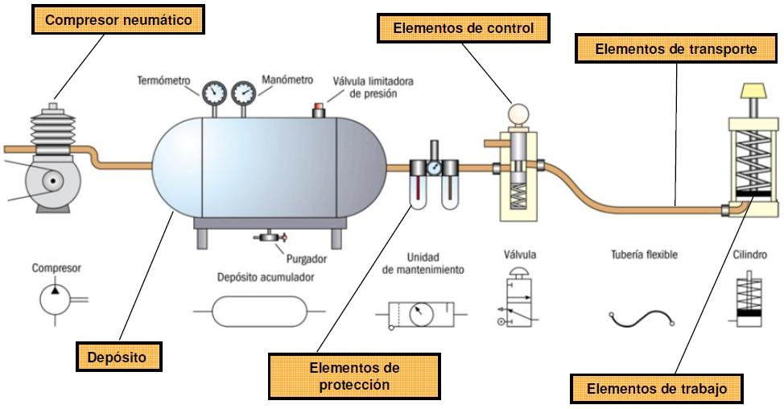
Volumétricos: reducen el volumen de la cámara → la presión aumenta (Boyle). Tipos: de pistón (monoetapa 3–10 bar, bietapa hasta 25 bar), de membrana (aire sin aceite), rotativos (paletas, tornillo, Roots — caudal continuo).
Dinámicos: aceleran el aire con álabes → la energía cinética se transforma en presión en el difusor (Bernoulli). Tipos: radiales (centrífugos) y axiales.
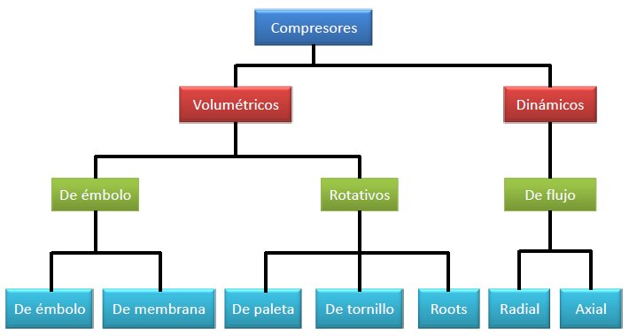
Almacena aire para picos de consumo. Incorpora: presostato (arranca/para el compresor), válvula de seguridad (sobrepresión), manómetro (lectura visual).
Siempre en este orden: Filtro → Regulador → Lubricador. Se instala cerca de los actuadores.
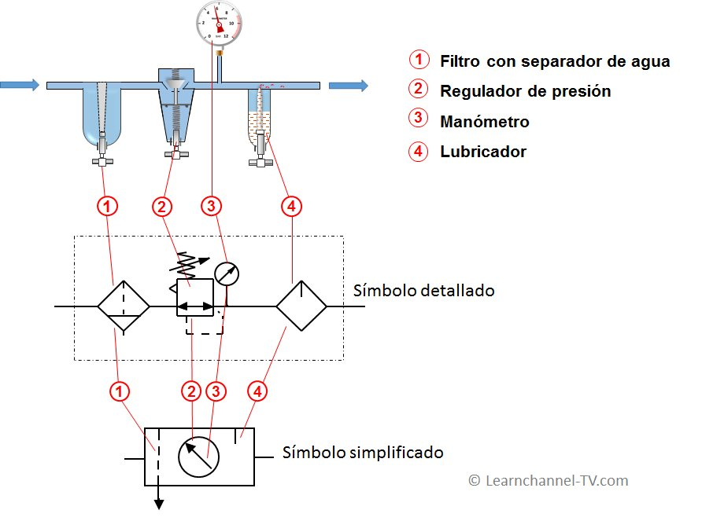
Se nombran con N° vías / N° posiciones. Cada posición = un cuadrado. Dentro se representan las conexiones y el sentido del flujo.
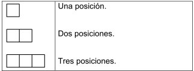
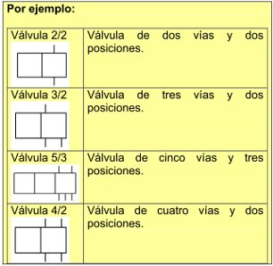
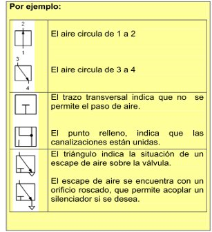
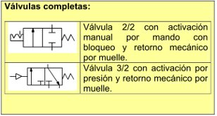
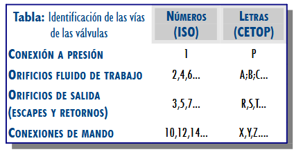
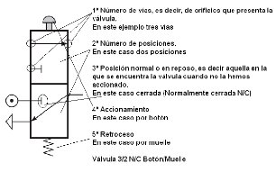
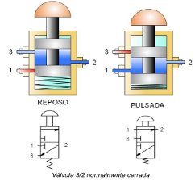
| Válvula | Vías | Posiciones | Uso principal |
|---|---|---|---|
| 2/2 | 2 | 2 | Paso o cierre de aire (NC o NA) |
| 3/2 | 3 | 2 | Mando de cilindros de simple efecto |
| 4/2 | 4 | 2 | Cilindros de doble efecto (escape común) |
| 5/2 | 5 | 2 | La más usada para cilindros de doble efecto |
| 4/3 | 4 | 3 | DE con posición central (centro cerrado o a escape) |
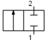
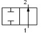
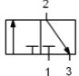
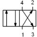
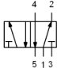
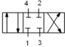
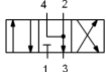
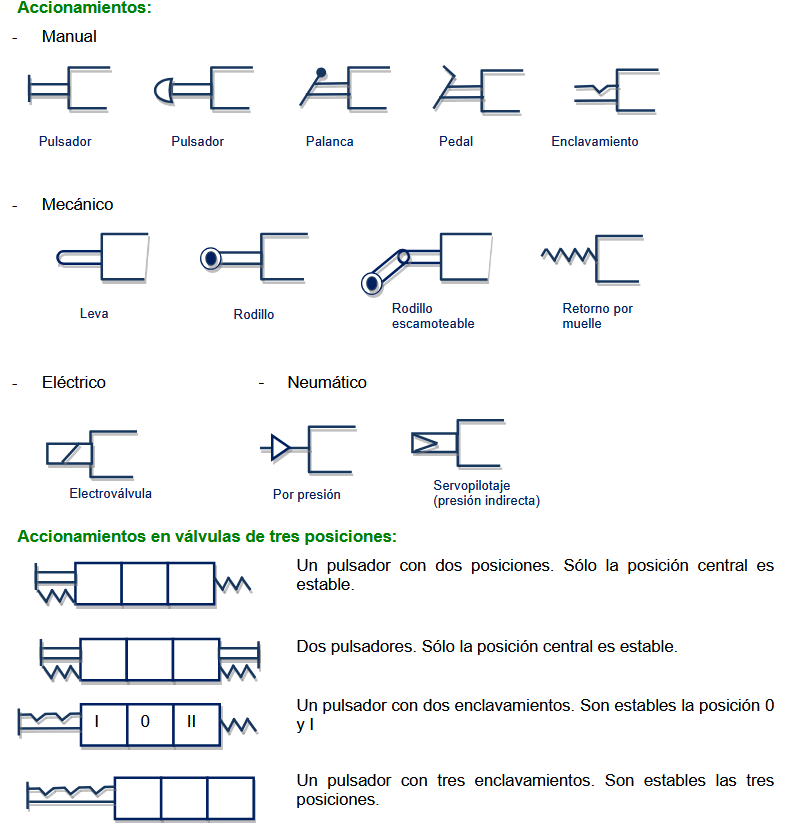
Estas válvulas permiten que el aire circule solo cuando se cumplen determinadas condiciones. Se emplean para crear funciones lógicas neumáticas, mantener presión en una rama, evitar retornos no deseados y hacer que una señal de mando dependa de otra. Son muy habituales en automatismos secuenciales.
Cierra el paso del aire en un sentido y lo deja libre en el contrario. Uso: mantener a presión una tubería de utilización.
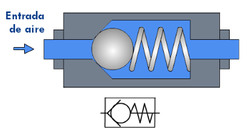
Dos entradas, una salida. El aire entra por cualquiera de las dos vías y sale por la utilización. Se usa cuando se desea mandar una señal desde dos puntos distintos.
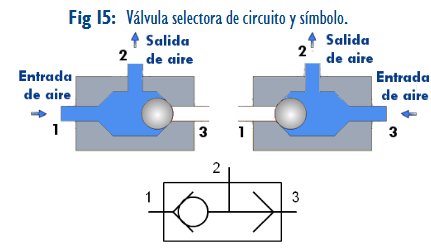
Dos entradas (X e Y), una salida (A). El aire solo sale cuando hay presión en ambas entradas simultáneamente.
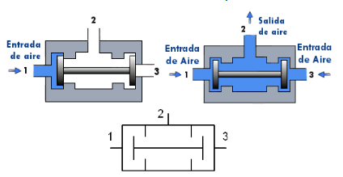
La velocidad de un cilindro depende del caudal de aire que entra o sale de sus cámaras. Una válvula reguladora de caudal estrangula el paso del aire y limita ese caudal. En neumática se prefiere normalmente regular por escape, porque el movimiento resulta más estable y menos brusco.
En un sentido el aire circula libremente (antirretorno). En el sentido opuesto, pasa por el regulador de caudal (tornillo ajustable) → controla la velocidad del cilindro.
La regulación se puede hacer por alimentación (aire entrante) o por escape (aire saliente, método más usado → movimiento más suave).
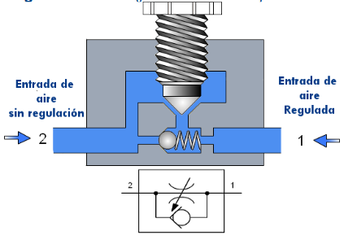
Regulan el caudal en ambos sentidos. El tornillo modifica la sección de paso al girar.
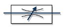
No todas las válvulas sirven para distribuir aire entre cámaras. Algunas están pensadas para limitar presión, otras para abrir o cerrar el paso, otras para introducir retardos temporales o para captar el final de recorrido de un actuador. Estos elementos complementarios son esenciales en el diseño de automatismos completos.
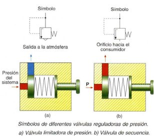
Abren o cierran el paso de aire para aislar partes de la instalación (reparación/mantenimiento). Manuales: palanca, volante, pulsador.
Reducen el ruido de los escapes mediante material poroso (bronce sinterizado, plástico poroso). Suponen una ligera reducción de velocidad en los cilindros.
Combinan: regulador unidireccional + depósito pequeño + válvula pilotada. Ajustando el regulador se controla el tiempo de retardo.
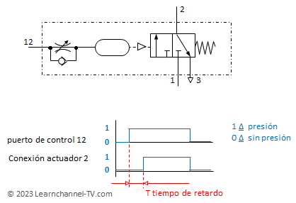
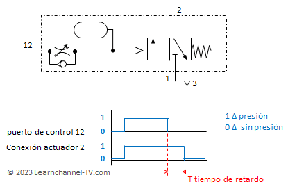
Es una representación ordenada de los movimientos de los cilindros a lo largo del tiempo o de la secuencia. Permite comprobar si el automatismo realiza exactamente el orden previsto y ayuda a localizar qué señal provoca cada cambio de estado.
El esquema de un circuito neumático se divide en niveles (de arriba abajo):
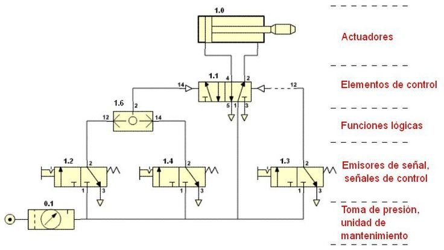
Representan el ciclo de funcionamiento de los elementos de trabajo en función de las fases:
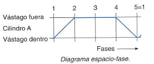
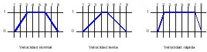
Para explicar correctamente el funcionamiento de un circuito neumático conviene seguir siempre el mismo método. De este modo la respuesta queda ordenada, técnica y completa.
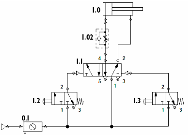
Para el circuito del ejemplo, los elementos que lo componen son los siguientes:
El estado inicial del circuito será la situación en la que se encuentra sin actuar sobre ningún elemento de mando. En este ejemplo, por la posición de la válvula 1.1, el aire ha entrado a presión en la cámara de la derecha del cilindro, expulsando el aire de la otra cámara hacia el exterior a través de la propia válvula 1.1. El vástago del cilindro está en reposo en la posición inicial de la carrera, es decir, el cilindro está retraído.
En este circuito hay dos pulsadores y, por tanto, dos situaciones de funcionamiento que deben explicarse por separado.
Cuando se acciona la válvula 1.2, esta envía una señal neumática que pilota la válvula 1.1. Como consecuencia, la válvula 5/2 conmuta y se produce la entrada de aire a presión en la cámara de la izquierda del cilindro, provocando el avance del vástago. El aire llega al cilindro a través de la válvula estranguladora 1.02. Sin embargo, en este sentido de circulación la válvula no opone resistencia al paso del aire, por lo que el vástago del cilindro avanza a velocidad normal.
Cuando se pulsa la válvula 1.3, esta manda una señal de presión a la válvula 1.1, que vuelve a cambiar de posición. En ese nuevo estado, el aire que abandona el cilindro sale a través de la válvula estranguladora 1.02. Esta vez la válvula sí ralentiza el paso del aire, por lo que el retroceso del vástago del cilindro se produce lentamente.
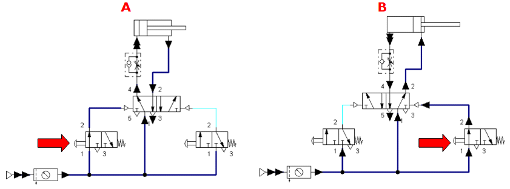
En los problemas de síntesis no se parte de un circuito ya dibujado, sino de un enunciado. Por eso es importante seguir un procedimiento ordenado que permita justificar la elección de cada elemento del circuito.
Lo primero es decidir si conviene un cilindro de simple efecto o de doble efecto. Para ello hay que valorar si hace falta realizar trabajo útil en un solo sentido o en ambos. Como se trata de una prensa, normalmente será necesario hacer fuerza tanto en el avance como en el retroceso, por lo que se elige un cilindro de doble efecto.
Una vez escogido el actuador, se selecciona la válvula que gobernará su funcionamiento. Si el cilindro fuese de simple efecto se usaría una válvula 3/2. Como en este caso el cilindro es de doble efecto, la opción habitual es una válvula 5/2. Además, dicha válvula debe ser accionada neumáticamente y volver automáticamente a la posición inicial cuando desaparezca la señal, por lo que se adopta retorno por muelle.
El enunciado exige dos pulsadores, por lo que se emplean dos válvulas 3/2 accionadas manualmente por pulsador y retorno por muelle. Como además ambos pulsadores deben accionarse a la vez para que el cilindro avance y, si uno se suelta, el cilindro vuelva a su posición inicial, es necesario incorporar una válvula de simultaneidad (función AND neumática).
Si el problema exigiese controlar la velocidad del cilindro, se añadiría una válvula estranguladora o reguladora de caudal unidireccional. En este ejemplo no es estrictamente necesario, porque el enunciado no pide regulación de velocidad.
Siempre debe aparecer la fuente de aire comprimido. Si el enunciado lo requiere, también se añade la unidad de mantenimiento o tratamiento del aire. En este caso basta con representar la alimentación neumática general.
En un circuito neumático los elementos deben colocarse por niveles funcionales. De arriba abajo suelen aparecer:
Una vez elegidos y ordenados, se conectan de forma que el circuito responda exactamente a lo que pide el enunciado.
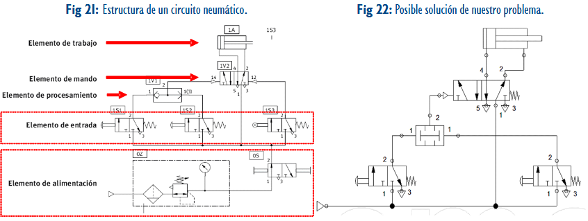
| Elemento | Función | Clave de lectura |
|---|---|---|
| Válvula 3/2 | Control de señal o cilindro SE | Tres vías y dos posiciones |
| Válvula 5/2 | Control de cilindro DE | Alterna presión y escape en las dos cámaras |
| Final de carrera | Detecta posición del vástago | Genera la siguiente señal de mando |
| Regulador unidireccional | Ajusta velocidad | Paso libre en un sentido y estrangulado en el otro |
Secuencia de análisis para circuitos con uno o dos cilindros, finales de carrera y válvulas distribuidoras.
| Elemento | Función | Pregunta de lectura |
|---|---|---|
| Unidad FRL | Prepara el aire | ¿De dónde sale la alimentación? |
| Válvula 3/2 | Mando de señal o cilindro simple | ¿Actúa por pulsador, rodillo, muelle o pilotaje? |
| Válvula 5/2 | Gobierna cilindro de doble efecto | ¿Qué cámara queda alimentada en cada posición? |
| Regulador unidireccional | Ajusta velocidad | ¿Regula entrada o escape? |
| Final de carrera | Detecta posición | ¿Qué movimiento habilita después? |
5 preguntas tipo PAU. Pulsa la opción que consideres correcta y se mostrará la respuesta.
1. La fuerza de avance de un cilindro neumático de doble efecto es:
2. ¿Por qué la fuerza de retroceso es menor que la de avance en un cilindro DE?
3. Una válvula 5/2 distribuye:
4. Para pasar el caudal de aire a condiciones normales se multiplica por:
5. Las fórmulas con cilindros usan presiones en:
La revisión final se centra en que el alumno pueda leer un esquema desde la alimentación hasta el movimiento del cilindro.
| Elemento | Qué hay que reconocer | Función en el circuito |
|---|---|---|
| FRL | Filtro, regulador y lubricación si aparece. | Preparar el aire de alimentación. |
| Válvula distribuidora | Número de vías, posiciones y tipo de accionamiento. | Decidir hacia qué cámara llega el aire. |
| Final de carrera | Accionamiento mecánico por el vástago o la pieza. | Generar señal al alcanzar una posición. |
| Regulador de caudal | Estrangulación con antirretorno. | Ajustar la velocidad, normalmente regulando el escape. |
| Cilindro | Simple o doble efecto y cámaras activas. | Transformar presión en fuerza lineal. |